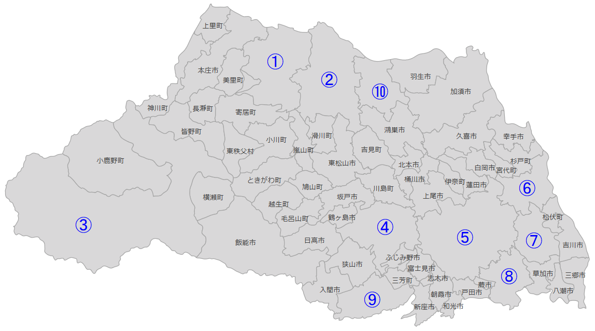

埼玉県の市

正しい市を選びなさい。
①日本で最も暑い市の一つ
②深谷ねぎの産地、渋沢栄一の生誕地
③埼玉県で一番大きい市、秩父山地に囲まれた秩父盆地に市街地がある
④江戸時代の城下町として栄え、古い町並みが観光地になっている
⑤埼玉県の県庁所在地、埼玉県で最も人口が多い市
⑥アニメ（クレヨンしんちゃん）で有名
⑦巨大なショッピングモール（レイクタウン）がある
⑧埼玉県で2番目に人口が多い市、鋳物（いもの）や植木が有名だった
⑨日本で初めて飛行場が作られた
⑩古墳（こふん）がある